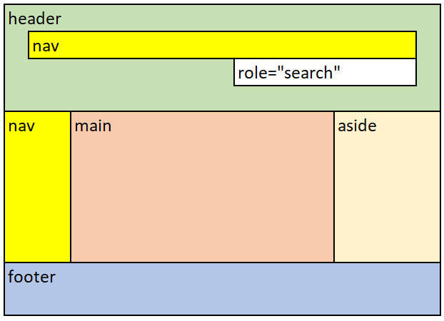

Landmarks
Designing with landmarks
Landmarks, also known as page regions, enable screen reader users to identify and navigate directly to important sections of a web page, skipping over blocks of content. Once you introduce landmarks, ensure all content on the page is included in a landmark as content outside a landmark can be easily missed.
You identify regions of the page with HTML5 sectioning elements or ARIA landmark role attributes.
| HTML5 sectioning element | ARIA landmark roles | Region |
|---|---|---|
<header>when child of <body>
|
role="banner"
|
Header - top region of every page that contains info such as logo, search, and nav options. |
<footer>
|
role="contentinfo"
|
Footer – bottom region of every page that contains info such as copyright, privacy or disclaimers |
<main>
|
role="main"
|
Main content region of a page |
<nav>
|
role="navigation"
|
Navigation Menu |
<aside>
|
role="complementary"
|
Complementary Content – regions that support the main content that is separate and meaningful, such as side note explaining the main content |
| n/a |
role="search"
|
Search – a region that contains a collection of items and objects that, as a whole, combine to create search functionality. |
<form>
|
role="form"
|
Form - a region that contains a collection of items and objects that, as a whole, combine to create a form. |
<section>
|
role="region"
|
The <section> element represents a generic standalone section of a document, which doesn't have a more specific semantic element to represent it. Sections should always have a heading, with very few exceptions.
|
Best practices for page regions and landmarks
- Use HTML5 sectioning elements (preferred) to identify regions on a page. Use ARIA landmark role attributes if HTML5 sectioning elements cannot be used.
- Exception: to support IE 11, add the role="main" attribute to the
<main>element.
- Exception: to support IE 11, add the role="main" attribute to the
- Ensure all content on the page is contained within a page/landmark region
- Ensure only one instance of:
<header>only as child of<body>, orrole="banner". A<header>is not considered a banner when it is the child of<article>,<aside>,<main>,<nav>or<section>.-
<footer> <main>
- Ensure
<header>(when the banner),<footer>,<main>are direct children of<body> - Limit the use of
<nav>to primary and secondary navigations- Use the
aria-labelattribute to differentiate multiple (different)<nav>items. - Use the
aria-labelledbyattribute to label a<nav>region that begins with a heading element - Provide short and descriptive labels
- Use the
- The landmark role is declared by a screen reader along with the name, if any. Do not use the landmark role (e.g., "navigation") as part of the name; for instance, the label is "Site" not "Site Navigation" for a navigation landmark.
- Use
role="search"rather thanrole="form"when the form is used for search functionality. - If the
<form>element is named (usingaria-label,aria-labelledbyortitleattribute), it will be designated as a landmark. - If you use
role="form", provide a brief label (usingaria-label,aria-labelledbyortitleattribute) that describes the purpose of the form. - If the
<section>element is named (usingaria-label,aria-labelledbyortitleattribute), it will be designated as a landmark. - If you use
role="region", provide a brief label (usingaria-label,aria-labelledbyortitleattribute) that describes the purpose of the content in the region.
Good example: Common landmarks
In this example, HTML5 sectioning elements define the landmarks for the most part. The role="search" attribute is unique and descriptive, and the redundant role="main" supports the IE 11 browser.
Code begins
<header>
<nav aria-label="global">…</nav>
<form role="search">…</form>
</header>
<nav aria-label="main">…</nav>
<main role="main">…</main>
<aside>…</aside>
<footer aria-label="footer">…</footer>
Code ends
